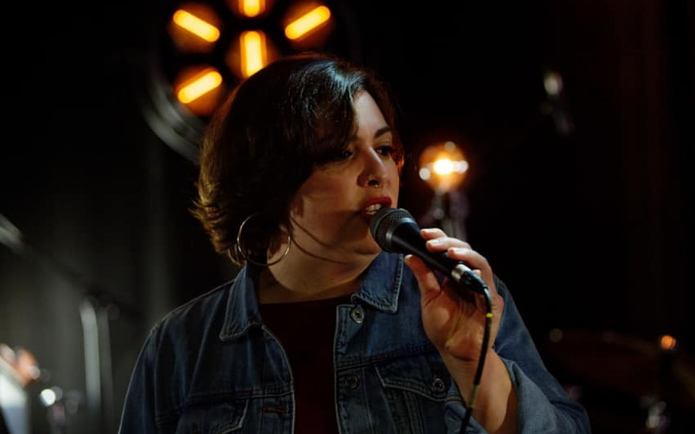

El Cojillo est né de la rencontre entre plusieurs musiciens de jazz férus de musiques latines : boléros, son cubain, salsa portoricaine, samba brésilienne…
Le groupe propose un florilège de thèmes issus de ces répertoires avec une joie de vivre communicative, emmené par la chanteuse et percussionniste Adriana Maria et ses amis Olivier Hutin à la flûte, Gwen Ollivier au piano, Fabricio Nicolas Garcia à la contrebasse et Alexandre Arnaud à la guitare.